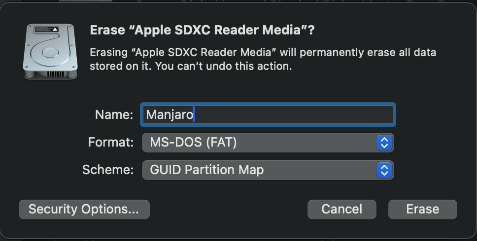
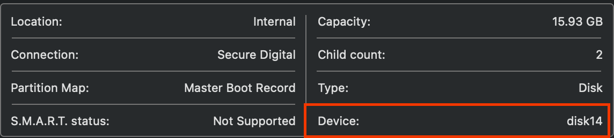

在树莓派上安装 Manjaro
文章目录
前言
前些日子收拾东西，发现了树莓派躺在家里吃灰，兴致一来打算插上电折腾一下。
但是想了老半天也没想起来用户名和密码，于是打算重装一下，最近几年一直都在使用 Manjaro ，去官网看了一下支持树莓派。
Manjaro 镜像选择
在 Download ARM – Manjaro 中选择树莓派，然后会有多种镜像可选，主要分为支持桌面环境和不支持桌面环境。
由于我打算用来跑一些服务，所以不需要桌面，所以我选择了 Minimal 。
桌面版的有一个地方要注意的是，安装过程需要有显示器，不支持在终端下进行安装，如果你没有显示器也就只能选择 Minimal 。
烧录镜像
在烧录之前要先格式化 SD 卡，我用的是 Mac 自带的 Disk Utility ，选择抹除进行格式化

格式化好之后需要把镜像烧录到 SD 卡中，先要确定一下设备，选中 SD 卡，如下所示

红色的部分就是设备号，然后执行如下指令进行烧录镜像，需要把 of 后面的 disk14 设备替换成红色部分
|
|
这个过程稍微有点久，耐心等待即可。
安装系统
镜像烧录完成后，把 sd 卡插进树莓派，用网线把树莓派接到路由器上，然后电源启动。
登录路由器的后台查看树莓派的 IP，通过 ssh root@ip 登录。
登录后，需要设置键盘布局、语言、用户名密码、root 密码、时区、主机名等等。这些比较简单，我的配置如下
- 键盘： US
- 用户和密码：自己开心就好
- 时区：Asia/Shanghai
- 语言：zh_CN.UTF-8
- 主机名：自己开心就好
安装软件
安装软件前，我们先把源切换到一个相对快速的地址，这样下载软件可以快一点
|
|
更新系统
|
|
安装一下常用软件
|
|
总结
在树莓派上安装和桌面上安装没啥区别，主要不同是桌面安装有好看的界面。